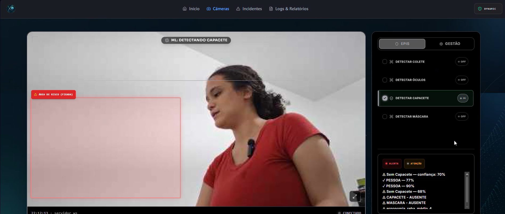
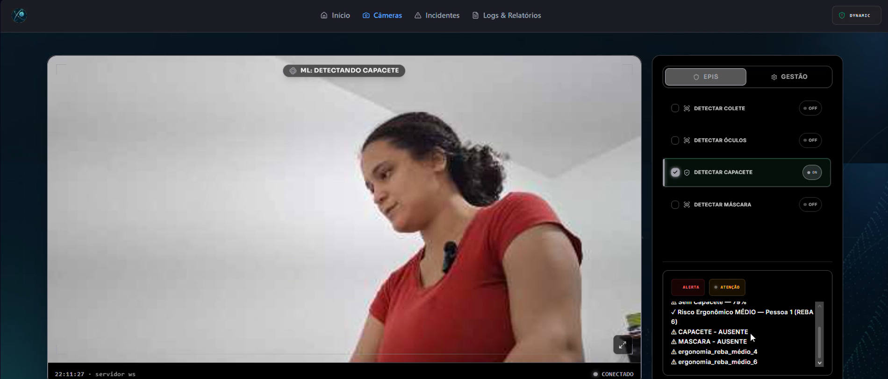
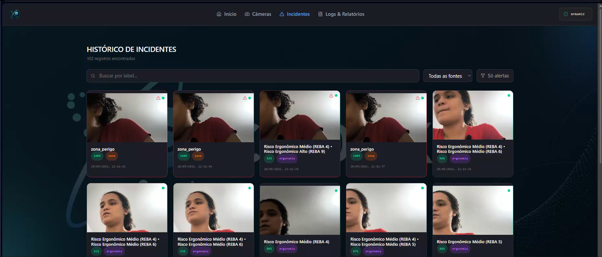
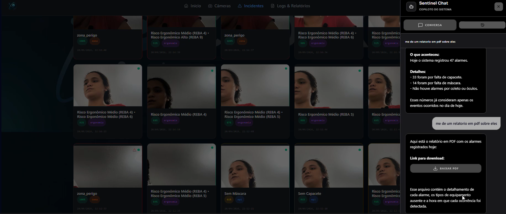

Sistema de Visão Computacional para Segurança Industrial
Detecção de EPI, risco ergonômico e zonas de perigo em tempo real — combinando múltiplos modelos de IA em um único veredito de segurança.
Vídeo pitch — apresentação em slides
2026
Equipe
Quem construiu o projeto
Gabriel Lacerda Covello Arimatéa
Desenvolvimento Fullstack — Backend & Frontend
Geovana Pederneschi
Machine Learning & Orquestrador de Inferência
Gustavo Andrade
Desenvolvimento Fullstack — Backend & Frontend
Lucas Santos Rodrigues
Desenvolvimento Fullstack — Backend & Frontend
Mayene Gabrielle Aragão Padilha Doria
Machine Learning — Ergonomia (REBA)
Thais Helena Ferreira Vieira
Machine Learning & Qualidade
O Desafio
Por que este projeto existe
Acidentes de trabalho continuam entre as principais causas de afastamento e óbito no ambiente industrial no Brasil. As Normas Regulamentadoras NR‑6 (uso de EPI) e NR‑12 (segurança em máquinas e equipamentos) exigem controle contínuo — mas, na prática, a fiscalização é manual, pontual e depende de alguém estar olhando no exato momento do risco.
Fiscalização manual é falha — não escala, não é contínua, depende de presença humana constante.
Riscos são múltiplos e simultâneos — EPI incorreto, postura inadequada, invasão de zona perigosa e quedas normalmente são tratados por sistemas isolados, sem visão unificada.
Pergunta que guiou o projeto: como automatizar o monitoramento de segurança industrial em tempo real, de forma acessível e local (edge), sem depender de nuvem?
Nossa Proposta
Um veredito único de segurança por câmera
O sistema captura vídeo em tempo real e roda, em paralelo, modelos de visão computacional para EPI, ergonomia, zona de perigo e queda — agregando tudo em um veredito único e imediato:
MONITORANDO
APROVADO
ALERTA
REJEITADO
Inferência 100% local (edge), sem depender de conexão com a internet durante a operação — importante para chão de fábrica.
Funcionalidades Inovadoras
O que torna o projeto diferente
🦺
Fusão multi-modelo
EPI + ergonomia + zona + queda combinados em um único veredito por frame, não alarmes soltos e desconexos.
🎥
Câmera dupla real
Frontal + lateral simultâneas, incluindo câmeras IP via RTSP (H.265), com modo configurável: mesmo posto por 2 ângulos ou áreas independentes.
🧍
Ergonomia em tempo real
Análise postural pelo método REBA sobre o esqueleto detectado, sinalizando risco de LER/DORT.
🚧
Zona de risco configurável
Delimitação visual da área de perigo direto pela interface, sem precisar mexer em código.
🗂️
Histórico com evidência
Todo incidente vira log com imagem, timestamp e câmera de origem, consultável depois.
🤖
Chat com IA
Assistente integrado para consultar os dados monitorados em linguagem natural, além de exportação de relatórios em PDF/Excel.
Roboflow — rotulagem e exportação do dataset customizado de EPI
Apoio ao desenvolvimento
Git / GitHub (controle de versão e branches por feature) · VS Code / PyCharm / IntelliJ IDEA (IDEs) · Documentação de requisitos e UML versionada no repositório · scripts de smoke test manuais
Arquitetura da Solução
Diagrama de integração dos componentes
Diagrama completo e detalhado disponível em docs/diagramas/arquitetura-solucao.drawio
Protótipo em Funcionamento
O que a demonstração em vídeo mostra
A parte central do vídeo pitch é a demonstração ao vivo do protótipo. Veja o funcionamento completo no vídeo — aqui, o resumo do que é demonstrado:
Login e tela de Monitoramento — carrossel de câmeras cadastradas (papel frontal/lateral).
Detecção de EPI ao vivo — bounding box e veredito mudando em tempo real ao remover/recolocar o capacete.
Ergonomia (REBA) e zona de risco — esqueleto sobreposto ao vídeo e alerta ao invadir a área demarcada.
Painel de alertas e histórico — incidentes registrados com imagem e horário.
Relatórios — exportação em PDF e Excel.
Chat com IA — perguntas sobre os dados monitorados respondidas na própria plataforma.
Protótipo em Funcionamento
Capturas de tela

Tela de Monitoramento — detecção de EPI com bounding box e veredito

Ergonomia (REBA) e zona de risco demarcada

Painel de alertas / histórico de incidentes

Relatório exportado (PDF/Excel) e Chat com IA
Perspectivas
O que falta até a entrega final
RNF‑02 — Latência: formalizar meta oficial de tempo de processamento (hoje medido, mas não formalizado como requisito fechado).
RNF‑03 — Retenção de logs: implementar limpeza automática de logs/imagens antigas.
Remoção de código legado: excluir o pipeline antigo de EPI (ml_service/main.py), já substituído pelo orquestrador atual.
Zona de risco por câmera: hoje a checagem de zona está amarrada a uma leitura de pose só; expandir para funcionar de forma independente em cada câmera cadastrada.
Aceleração de inferência: TensorRT foi testado mas a GPU disponível não teve VRAM suficiente para compilar o engine — seguimos com CUDA padrão, já validado com boa latência.
Principais Códigos
O coração da decisão de segurança
orquestrador/main.py
# combina EPI + ergonomia + zona + queda def _aggregate(epi, pose, zona, queda): if queda.detectada: return"REJEITADO" if epi.tem_risco or zona.invadida: return"ALERTA" if pose.risco_ergonomico: return"ALERTA" return"APROVADO"
frontend/.../CameraView.jsx
// desenha bounding boxes e esqueleto no canvas function drawAll(ctx, detections, pose) {
detections.forEach(d =>
drawBox(ctx, d.bbox, d.label)); if (pose) drawSkeleton(ctx, pose);
}
Trechos simplificados para fins de apresentação — código completo no repositório do projeto.
Obrigado!
Sistema de Visão Computacional para Segurança Industrial — Challenge SPI · FIAP